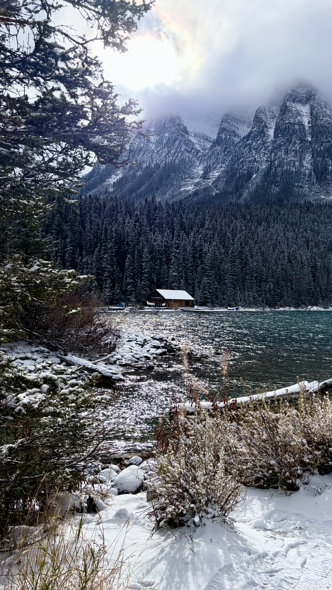
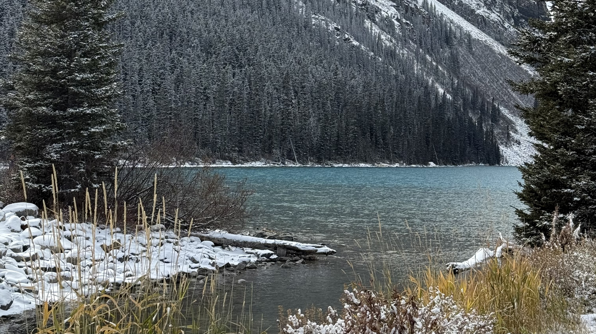
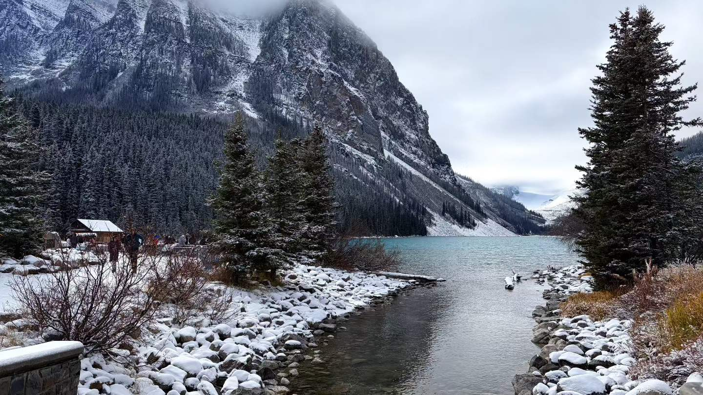
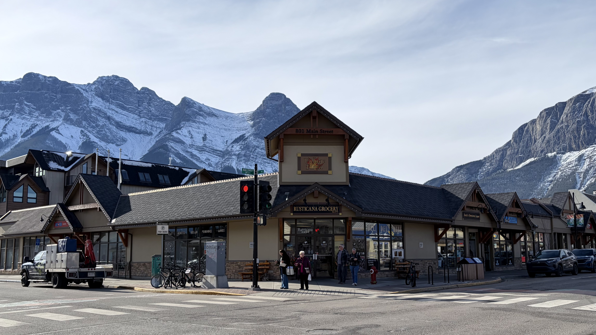
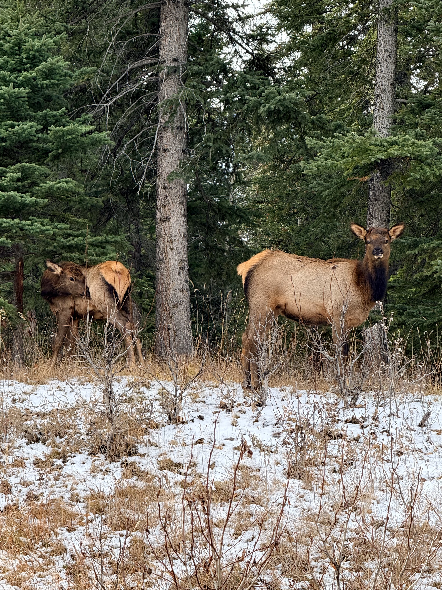

About This Story
During reading week, I visited Banff to explore the Canadian Rockies and capture the landscapes along the way. This collection brings together mountain views, lakes, scenic roads, and small moments from the trip.
Lake Louise
One of the highlights of my trip was visiting Lake Louise. Surrounded by the Rocky Mountains, the lake offered stunning views from every angle. I enjoyed capturing the turquoise water, snow-covered mountains, and the way natural light changed the scenery throughout the day. Each view offered a different perspective, making it one of my favourite photography spots on this trip.



More Moments in Banff
Beyond Lake Louise, I captured many other scenes throughout Banff. From winding mountain roads and quiet town streets to an unexpected encounter with a group of deer on the way back, each moment added a different memory to the journey.

